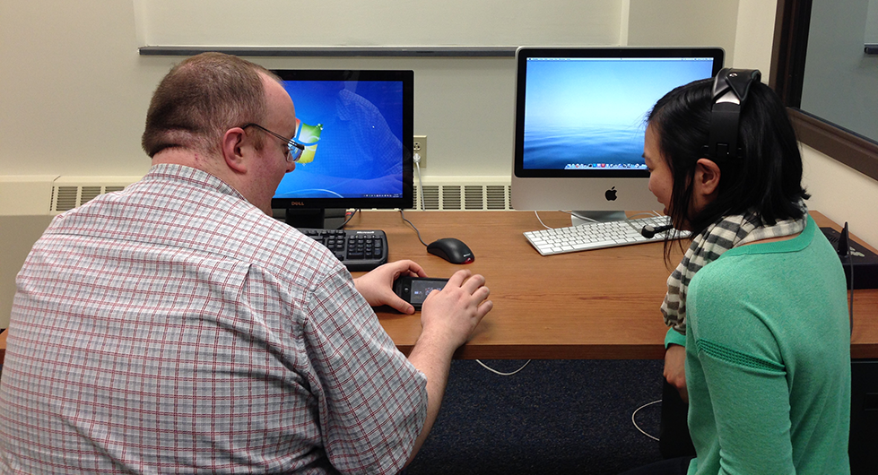

My Kodak Moments
Usability Testing
Software
POP (Prototyping on Paper) · Morae usability testing software
Hardware & Tools
Mr. Tappy phone recording camera rig
Skills Used
heuristic evaluations · participant recruitment · designing test materials · moderating · data analysis
This was a five-person group project for our client, Kodak Alaris. We worked directly with one of their design teams to assess the usability and user experience of their mobile application, My Kodak Moments (now simply called Kodak Moments). Due to signing an NDA, I'm unable to talk about details, but I can go over our process for the project.
Heuristic Evaluations
We first conducted our own heuristic evaluations, based on Nielsen’s heuristics. We were able to familiarize ourselves with the app during this stage; in particular, we became aware of areas of improvement for the app and fully documented our assessment with ratings for each of our heuristic criteria.
Preparing the Usability Study
We then designed a usability study to compare the current version of the app to one that was currently in development. This required the preparation of all test materials, from aiding in the creation of an interactive prototype (via the POP prototype application), to writing questionnaires probing at users’ opinions about the app. We also created recruitment flyers and scheduled participants for our one-hour study. In total, we recruited and ran 12 participants.
Running the Usability Study
Our study was run in RIT’s usability testing lab. This gave us access to a set of rooms connected via a one-way mirror: one team member would be the moderator running the usability study with the participant, while the rest of our team could better observe and record what happened during the study on the opposite side. We took turns in the moderator role and the observer roles.
Moderating
For the moderator role, we led the participant through a think aloud session as they navigated the app, based on the specific scenarios we provided them. After completing each task, participants filled out short questionnaires, which consisted of both quantitative and qualitative assessments. At the end of the full session, we debriefed participants to gather more substantial information about their experiences with the app.
As a moderator, I found the experience to be very rewarding: participants were surprisingly quite open to give their feedback about the app, and the think aloud technique provided a direct way to understand the product from the user’s perspective. The free-flowing nature of the study also allowed us to explore many aspects of the app that could not have been found through our heuristic evaluations.
Observing
For the observer roles, we video recorded each session using Morae usability testing software to annotate the study in real time, such as when participants made errors during app use. We also jotted down quotes from participants and other notes that provided us with better insight about the strengths and weaknesses of the app. These details, along with our questionnaires, provided the bulk of the data to be used for analyzing the app’s user experience.
Assessment
Our project culminated in a final report with our findings, and we also presented the key points and suggestions to our client. The usability tests were a valuable tool in evaluating Kodak Alaris’s app, and I’m proud to have meaningfully contributed to improving their product.